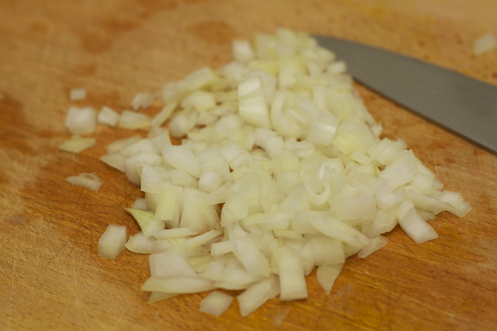

1. Snijd de varkenshaas in blokjes en de knoflook fijn. Meng de varkenshaas met de ketjap, chilisaus en knoflook. Marineer afgedekt minimaal 1 uur.
2. Rijg de varkenshaas aan de prikkers. Meng de komkommerrauwkost met de rauwkost Amsterdamse ui en verdeel over een schaal. Bestrooi met de pinda's. Bak de varkenssaté op de hete bakplaat van het gourmetstel in 5 min. bruin en vanbinnen rosé.
3. Bereid ondertussen de satésaus volgens de aanwijzingen op de verpakking. Serveer de saté met de satésaus en de rauwkost.
Variatietip: Geef de satésaus een fris accent en voeg 2 in blokjes gesneden halve perziken (blik) toe.
